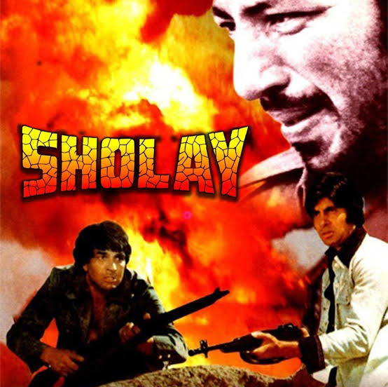
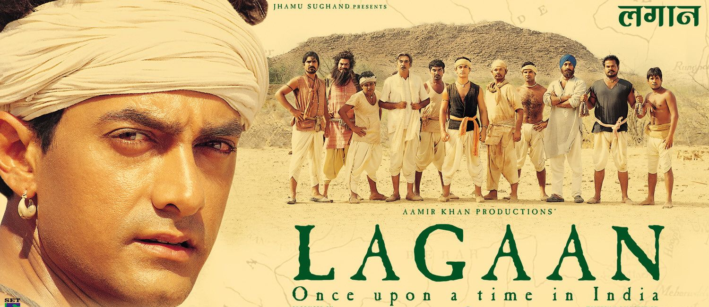

Sholay (1975)
# Universally praised for storytelling, dialogues, characters, and music.
# Gabbar Singh is often cited as the greatest Hindi film villain ever.
# Perfect blend of action, drama, friendship, and tragedy.

Mother India (1957)
# Powerful portrayal of womanhood, sacrifice, and ethics.
# Nargis’s performance is considered one of the finest in Indian cinema.
# First Indian film nominated for an Oscar.

Lagaan (2001)
# Unique concept combining cricket, colonialism, and rural India.
# Strong performances, especially by Aamir Khan.
# Internationally praised; Oscar-nominated.
